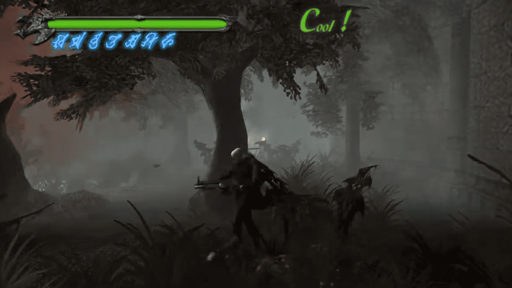
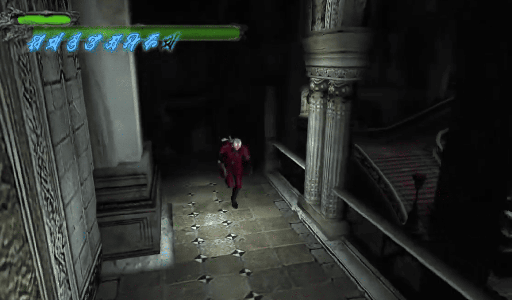

←Misión IX: La nueva fortaleza→
Agarra algunos Orbes Rojos escondidos en el área si quieres; los escondites de orbes rojos están en la parte superior de las 3 columnas que no están coronadas con un diamante. No te pierdas la Estrella del Diablo gratuita escondida detrás de la lápida en el centro del camino; tendrás que recogerla (como cuando agarras una llave oxidada). Abajo del área hay una escalera de caracol. Baja por ellas y luego pasa por la puerta en la parte inferior de la escalera. A través de ella llegarás a un Patio. Las cuchillas, enemigos que fueron arrancados de Dino Crisis, pueblan esta área, así que usa tu Alastor para luchar contra ellos (incluso después de obtener Ifrit, Alastor puede lidiar con estos enemigos rápidamente). Nota que una puerta está cerrada y tiene una antorcha apagada.
Si estás jugando de nuevo, puedes usar Ifrit para encender la antorcha y saltar la pelea contra el Jefe, pero la primera vez que juegas, necesitas ganar Ifrit. Puedes obtener un fragmento de Orbe Azul yendo a la derecha desde la puerta por la que llegaste al Patio, habrá un largo camino que lleva a una lápida. Ataca la lápida para moverla hacia atrás y obtener el Orbe Azul. También hay un Orbe Amarillo al lado opuesto de la entrada al patio que es bastante fácil de notar. Antes de que pases por la puerta abierta, salta sobre el edificio pequeño a su izquierda (el que tiene dos antorchas blancas ardiendo) para conseguir un Agua Bendita. Pasa por la única puerta abierta en el área. A través de ella, sube por una escalera en cualquier lado y agarra los ítems. Busca el interruptor en forma de escudo circular y golpéalo para que las plataformas se eleven en el aire. Dirígete a la derecha desde el escudo (según el ángulo de la cámara) y salta sobre la primera plataforma. Te llevará varios intentos, pero Dante puede hacer todos los saltos saltando en el momento adecuado (no necesitas Salto Aéreo o Asedio Aéreo para hacer ninguno de los saltos). Dado que no hay enemigos en el área en este momento, tómate todo el tiempo que necesites para llegar a cada plataforma.
Las plataformas suben o bajan, lo que dificulta saltar a las siguientes plataformas sin caer de nuevo al suelo. La sincronización es cuidadosa para esto, porque si saltas demasiado tarde o demasiado temprano, terminarás en el suelo. Cuando la plataforma que sube está más o menos igualada con la siguiente plataforma, muévete en esa dirección y ¡presiona Triángulo! Sé rápido, porque la ventana de salto es pequeña. Cuando la plataforma necesita descender para llegar a la siguiente plataforma, espera y ve dónde se detiene y sube de nuevo. Ahora que conoces la ubicación de la plataforma, salta a la siguiente. Cuando ambas estén moviéndose al mismo tiempo, espera hasta que la plataforma a la que apuntas esté igualada o más baja que la plataforma en la que estás. Salta y eventualmente llegarás a la plataforma final. Agarra el Ifrit en la cima y equípalo. Es necesario para pasar por la puerta en el Patio (la habitación anterior). Ahora debes enfrentarte al próximo jefe.
Griffon es simplemente el feliz y encantador búho asesino del vecindario, así que no hay necesidad de tener miedo. Vas a terminar odiándolo con el tiempo. Aparece tres veces, pero en las siguientes partidas, puedes saltarte su primera aparición en el Coliseo. La estrategia para la primera vez es diferente a las otras dos veces que lo enfrentas. También puedes luchar contra Griffon (sin mencionar a Phantom) en otro combate de jefes más tarde. Las segundas y terceras batallas son generalmente las mismas. La batalla dentro de Pesadilla se lucha como la primera pelea, que en realidad no es un jefe, sino parte de un jefe. Bueno, aquí están sus ataques. De vez en cuando descenderá y te atacará. Esta es una oportunidad perfecta para saltar de su cara y golpearlo. Si no te mueves, te golpeará con su pico. Este es su ataque más fácil de esquivar. A menudo disparará orbes de trueno que se quedan cerca de él pero proyectan líneas de trueno hacia ti, a tu altura actual. Se unirán y luego permanecerán en línea por un segundo. Salta sobre ellos a la izquierda o derecha y estarás bien. También saltar arriba y abajo puede ayudar, ya que si estás en el aire, ellos apuntarán al aire, no a ti.
Similar a esto, él dispara rayos de relámpagos paralelos al suelo hacia ti, a tu altitud actual. Salta el primero, agáchate bajo el segundo, etc. Hará bombardeos en la primera pelea y dentro de la Pesadilla, así que simplemente rueda para esquivarlos. Te bombardeará en todas las peleas, así que ten cuidado cuando se eleve por encima de tu nivel de vista por un segundo. Sigue rodando para evitar esto. Es tentador usar la Pistola de Granadas, aunque es demasiado lenta (incluso si haces rollos laterales para acortar la animación de Dante), a menos que estés usando el Disparo del Diablo. Es posible que quieras usar la Pistola de Granadas para recolectar Disparo del Diablo, luego usa las pistolas potenciadas con Ifrit para golpear a Griffon. Siempre y cuando evites más ataques de los que recibas, Dante puede vencer fácilmente a este jefe. La escopeta no es adecuada, ya que es un arma de corto alcance. Cada vez que se acerque, salta sobre él y golpea con Ifrit o Alastor. No debería ser demasiado difícil. Ve hacia la puerta a la derecha de la puerta que conduce a esa habitación de la plataforma. A la derecha, usa tu nuevo Ifrit para romper el sello de la puerta (encendiendo la antorcha).
Dentro, cruza el bosque brumoso pero no olvides recoger algunos objetos en el camino. Dentro del bosque brumoso verás un árbol roto. Sáltalo para encontrar otro escondite de Orbes Rojos y antes de intentar pasar por la puerta, puedes subirte al edificio para encontrar un Orbe Verde. Ahora intenta pasar por la puerta hacia el pequeño edificio, pero ocurrirá una escena. Los marionetas te atacarán, así como un Fetiche, así que mátalos a todos para desbloquear la puerta del pequeño edificio. Ve a través del umbral y baja por una escalera para comenzar una batalla con el Fetiche. Hay numerosos objetos para recoger en todo el nivel, así que recógelos todos. No te olvides del Devil Star oculto y la Estatua de Orbe Rojo sobre las escaleras (simplemente dobla el salto desde la parte superior de las escaleras para entrar en el camino). Mata a todos los Fetiche en el área y gasta 200 Orbes en la puerta cercana. ¡Pasa por ella y termina la misión!
Mision X: Cañon de la niebla
Estás en un camino lleno de niebla. Elimina a todos los monstruos en esta área antes de examinar la lápida, o podrías perderte. Examinar la lápida creará una luz flotante que necesitas seguir. Si no sigues el camino por el que va la luz, volverás a comenzar la etapa automáticamente. La luz es atraída por cualquier enemigo cercano y solo al matar a ese enemigo puedes liberar la luz para que te muestre qué camino debes tomar. Si la luz se aleja de Dante, aún puedes tomar la decisión correcta si sabes por qué camino se dirigió. Si tomas el camino incorrecto, Dante volverá a la primera parte de la sección. Cuando llegues a una nueva sección, elimina a todos los enemigos en los que se oculta la luz y simplemente dirígete hacia el camino que la luz elija para salir. Hay 3 secciones por las que pasar. Jugando en la dificultad normal, te enfrentarás a un conjunto diferente de enemigos en cada sección, esos enemigos son Sin Scythes, Blades y Marionettes/Fetiches. Por lo que puedo decir, no hay un orden establecido en el que encontrarás cada grupo. Cuando Dante llegue a un patio custodiado por dos Kyclops, matarlos abrirá la salida. ¡No te pierdas las piedras verdes y el ítem antes de terminar la etapa!
Misión XI: Guardián del invernadero
Tu primera tarea es matar al Death Scythe. A diferencia del Death Scissor anterior, puedes moverte mucho más, así que necesitas seguir usando Alastor y la escopeta para matarlo. High Time y disparos de escopeta en el aire funcionan, pero debes tener cuidado con el Death Scythe cuando se lance hacia Dante. Los círculos oscuros que surgen no lastiman a Dante, pero lo colocarán dentro del rango del enemigo para recibir daño. Utiliza el Devil Trigger para eliminar al Death Scythe lo más rápido posible; hay una Estrella del Diablo en el medio de la habitación (en una repisa flotante), así que si quieres, puedes usar una Estrella del Diablo "gratis". Salta sobre la plataforma que aparece después de la batalla. Hay muchas Orbes Rojas para recolectar en toda la habitación, así que recógelas buscando por todos lados. No te pierdas la Estrella del Diablo en el altar flotante. Una vez que hayas recogido todas las Orbes Rojas que puedas encontrar, regresa al centro de la habitación. Encuentra el pozo muy obvio junto al árbol gigante y salta al estilo de Silent Hill 2.
Las cuchillas están en la parte inferior, así que elimínalas rápidamente. Matar a todas las cuchillas en el pozo también te dará un fragmento de Orbe Azul. Rompe la pared para matar al resto de las cuchillas y encontrar un camino hacia una de las salas de cristal a las que no puedes llegar desde el Invernadero. Deberías encontrar fácilmente el Símbolo de Castidad; antes de dejar esa área, asegúrate de saltar por encima de donde encontraste el sello de castidad. Hay una repisa allí donde puedes encontrar otro Caché de Orbes Rojos. Una vez que lo hagas, vuelve a través del pozo. Si necesitas algo de vida o más ítems, mata a las cuchillas repetidamente por orbes rojos y usa el Dios del Tiempo en el fondo del pozo para reabastecerte. Se acerca una pelea de jefe. Aunque Inferno es una buena compra, Nelo Angelo es débil contra la Patada 13 de Ifrit (mientras está en Devil Trigger), así que es posible que quieras considerar comprar eso para la pelea inminente. Antes de irte, incluso podrías considerar explorar los otros espacios en el Invernadero para encontrar más fragmentos de Orbe Azul y piedras verdes.
Regresa al área superior, llamada el Invernadero. Busca en tu mapa el área del norte y luego las puertas allí. Salta a una plataforma en la zona central y luego baja la plataforma. Dirígete a la parte inferior de esta habitación. Recuerda la puerta cercana. Hay un objeto brillante. Cambia el Símbolo de Castidad por el Cáliz. ¡Ahora tenemos que luchar contra otro jefe! Nelo Angelo - Difícil Nelo Angelo aparece tres veces, y la última vez es más difícil que las dos primeras, así que úsalo para calentar motores para el futuro. Su nombre significa "no ángel" en español (ahora no pueden decir que no aprendiste nada de este juego). Tiene algunos ataques, aprende a evitarlos. Tiene un combo básico de Golpe/Golpe/Doble Golpe, similar al tuyo, con el tiempo hecho correctamente. Simplemente corre de este, ya que incluso es difícil esquivar los cuatro golpes a corta distancia. Tiene un movimiento similar a una aguijoneadora, que usualmente hace teletransportarse antes. Él pondrá su espada en una postura de estocada, como el Gotetsu de Kenshin. Luego cargará una distancia insana y te atravesará si puede. Rueda fuera de su camino y atácalo. Él teletransportará más a menudo que no, para cogerte desprevenido. Cada vez que se teletransporta, prepárate para esquivar, ya que saldrá de él con un ataque. Tiene bolas de fuego que tarda un segundo en cargar, y si puedes golpearlo en ese segundo, bien por ti, lo desactivarás. Si no puedes esquivarlo, no es tan difícil. También tiene el golpe superior, luego el golpe en picada. Esto te golpeará incluso en el aire, así que ten cuidado.
Para matarlo, debes golpear en los momentos adecuados. Justo después de que él ataque es bueno. No puedes simplemente correr ciegamente, ya que él te bloqueará. Si puedes entrar en modo de Devil Trigger, entonces él no podrá bloquear tus últimos dos golpes, así que atácalo. Pero ten cuidado, tiene un movimiento donde sostiene su espada horizontalmente que básicamente nada puede detenerlo. Salta si lo ves haciendo esto. Nunca intentes golpearlo después de un teletransporte. Él está bastante lleno de sí mismo y te tauntea a menudo. Siéntete libre de arreglarle la cara en este momento. También se preparará para algunos movimientos sosteniendo su espada en posición vertical. Golpéalo mientras hace esto, y retrocederá. Si lo golpeas de nuevo, quedará aturdido y podrás atacarlo un poco. En general, solo golpea y corre, no uses las pistolas con demasiada frecuencia ya que hacen poco daño, y él las bloqueará, o incluso mejor, disparará sus bolas de fuego contra ti.
No puedes hacer trampas con Nelo Angelo tan fácilmente esta vez ya que la habitación está más abierta. Si logras correr a algún lugar donde no pueda alcanzarte, simplemente caminará hasta que vayas a un lugar donde pueda atacarte. Usa Kick13 de Ifrit mientras estás en Devil Trigger si es posible, luego, para volver a llenar la barra de Devil, ataca a Nelo Angelo cuidadosamente usando Alastor o Ifrit (si pausas y cambias de arma Devil, puedes cambiar instantáneamente en lugar de depender de R3). Hay dos piedras verdes en la habitación si te quedas sin vida. Una piedra está justo después del lugar donde estaba el Cáliz, en una fuente. La segunda piedra verde (nota que estas piedras solo aparecen en Normal) está en el techo de la estructura que contenía el Cáliz. Es posible que necesites Air Hike (o hacer un salto en la pared) para obtener esta segunda piedra. Cuando Nelo Angelo sea derrotado, puedes saltar a una plataforma más alta y verás una pequeña habitación con el busto de un caballero dentro. Coloca el Cáliz allí para desbloquear la salida y terminar la misión.
Misión XII: Barco fantasma
Antes de entrar en el barco, si no estás seguro de cómo nadar, deberías practicar un poco en el agua justo fuera del barco. No saber nadar le costará a Dante mucha vida. Si aún no estás seguro de cómo nadar, compra una Estrella de Vitalidad del Dios del Tiempo por si acaso (¡eso es solo un desperdicio de dinero, por cierto!). Baja las escaleras y no te pierdas el jarrón de orbes antes de llegar al agua. Salta al agua y atraviesa el agujero hacia el barco. Nada, pero evita a los monstruos ya que ¡todavía no tienes la Pistola de Aguja! Sal del agua dentro del barco lo más rápido posible y sube las escaleras cercanas. Mata a los dos Blades que aparecen. Ahora explora un poco sin salir de la habitación (y sin que vuelvan a aparecer más enemigos). La Pistola de Aguja está cerca de las escaleras y es bastante difícil de perder de vista ya que brilla. Se equipa automáticamente cuando estás bajo el agua, así que no te preocupes por eso. No se puede usar fuera del agua, así que todavía dependes de la Escopeta, las Pistolas o la Pistola de Granadas por ahora.
Recoge la Estrella del Diablo cerca del cofre junto a las escaleras y luego salta al agua cerca de las escaleras (donde tomaste la Pistola de Aguja). Los barriles que puedes disparar contienen valiosos Orbes Rojos y hay un Intocable en esta sala inundada, que será útil para el próximo jefe. Regresa al barco y sigue las escaleras hasta la puerta que conduce a la cubierta del barco. En la cubierta del barco, no investigues nada (presionando Cuadrado o Cruz) y sube a la torre de vigilancia cerca de la proa del barco. Llega al punto más alto y, si tienes Stinger, haz ese movimiento hacia la cámara para obtener otro fragmento de Orbe Azul (no estoy seguro si tienes que jugar en un modo específico para conseguir esto. Lo intenté pero no pude obtener un Orbe Azul). En la torre de vigilancia más cercana a la parte trasera del barco, hay una Caché de Orbes Rojos en el lado izquierdo del segundo nivel. Hay otra en la torre central en el lado derecho del segundo nivel y una tercera en la torre final en el lado derecho del nivel superior.
Antes de entrar en el barco, si no estás seguro de cómo nadar, deberías practicar un poco en el agua justo fuera del barco. No saber nadar le costará a Dante mucha vida. Si aún no estás seguro de cómo nadar, compra una Estrella de Vitalidad del Dios del Tiempo por si acaso (¡eso es solo un desperdicio de dinero, por cierto!). Baja las escaleras y no te pierdas el jarrón de orbes antes de llegar al agua. Salta al agua y atraviesa el agujero hacia el barco. Nada, pero evita a los monstruos ya que ¡todavía no tienes la Pistola de Aguja! Sal del agua dentro del barco lo más rápido posible y sube las escaleras cercanas. Mata a los dos Blades que aparecen. Ahora explora un poco sin salir de la habitación (y sin que vuelvan a aparecer más enemigos). La Pistola de Aguja está cerca de las escaleras y es bastante difícil de perder de vista ya que brilla. Se equipa automáticamente cuando estás bajo el agua, así que no te preocupes por eso. No se puede usar fuera del agua, así que todavía dependes de la Escopeta, las Pistolas o la Pistola de Granadas por ahora. Recoge la Estrella del Diablo cerca del cofre junto a las escaleras y luego salta al agua cerca de las escaleras (donde tomaste la Pistola de Aguja). Los barriles que puedes disparar contienen valiosos Orbes Rojos y hay un Intocable en esta sala inundada, que será útil para el próximo jefe. Regresa al barco y sigue las escaleras hasta la puerta que conduce a la cubierta del barco. En la cubierta del barco, no investigues nada (presionando Cuadrado o Cruz) y sube a la torre de vigilancia cerca de la proa del barco. Llega al punto más alto y, si tienes Stinger, haz ese movimiento hacia la cámara para obtener otro fragmento de Orbe Azul (no estoy seguro si tienes que jugar en un modo específico para conseguir esto. Lo intenté pero no pude obtener un Orbe Azul). En la torre de vigilancia más cercana a la parte trasera del barco, hay una Caché de Orbes Rojos en el lado izquierdo del segundo nivel. Hay otra en la torre central en el lado derecho del segundo nivel y una tercera en la torre final en el lado derecho del nivel superior. Investiga las puertas con las espadas cruzadas y ataca al Death Scythe que sale. Tu primer trabajo es matar al Death Scythe. A diferencia del Death Scissor anterior, puedes moverte mucho más, así que necesitas seguir usando Alastor y la Escopeta para matarlo. High Time y los disparos de escopeta en el aire medio funcionan, pero debes tener cuidado con el Death Scythe cuando se lanza hacia Dante. Los círculos oscuros que emergen no hieren a Dante, pero lo colocarán dentro del alcance del enemigo para ser dañado. La parte difícil de esta pelea es el terreno roto del barco (y el mal ángulo de la cámara). Usa precaución al luchar contra el Death Scythe y recuerda que da una piedra verde cuando se lo mata.
Usa el Devil Trigger para derrotar al Death Scythe lo más rápido posible, reclama las cosas que suelta e investiga la puerta de la espada en llamas para activar una cinemática. ¡Otra pelea de jefes comienza! Griffon es simplemente el feliz y alegre asesino de búhos trueno del vecindario, así que no hay necesidad de tener miedo. Te vas a cansar de odiarlo a medida que pase el tiempo. Aparece tres veces, pero en partidas posteriores, puedes saltarte su primera aparición en el Coliseo. La primera vez tiene una estrategia diferente a las otras dos veces que luchas contra él. También puedes luchar contra el Griffon (sin mencionar al Phantom) en otra pelea de jefes más tarde. Las segundas y terceras batallas son generalmente iguales. La batalla dentro de Nightmare se libra como la primera pelea, que no es realmente un jefe, sino como parte de un jefe. Bueno, aquí están sus ataques. De vez en cuando, bajará y te cargará. Esta es una oportunidad perfecta para saltar de su cara y golpearlo. Si no te mueves, te golpeará con su pico. Este es su ataque más fácil de esquivar. A menudo disparará orbes de trueno que se quedan cerca de él pero proyectan líneas de truenos hacia ti, a tu altitud actual. Se juntan y luego se quedan en línea durante un segundo. Salta sobre ellos hacia la izquierda o hacia la derecha y estarás bien. También saltar hacia arriba y hacia abajo puede ayudar, ya que si estás en el aire, apuntarán al aire, no a ti.
Similar a esto, él dispara rayos de relámpagos paralelos al suelo hacia ti, a tu altura actual. Salta el primero, agáchate para esquivar el segundo, etc. Hará ataques aéreos en la primera pelea y dentro de la Pesadilla, así que simplemente rueda para evitarlos. En todas las peleas, te atacará en picado, así que ten cuidado cuando se eleve por encima de tu nivel de vista por un segundo. Sigue rodando para evitar esto. En la segunda batalla, creará una especie de cometa para molestarte, que se te adhiere con electricidad y te lanza hacia el cielo. Dispara para destruirla momentáneamente. En la segunda batalla, en general, Griffon hace muy poco excepto atacar con picados y con láseres. Donde la Pistola de Granadas es buena para la batalla en tierra, es posible que quieras usar las Pistolas y alargar la pelea, ya que la Pistola de Granadas no se puede disparar en el aire y es desorientador cambiar de armas cuando la cometa golpea a Dante. Las Pistolas potenciadas por Ifrit funcionan mejor contra este Griffon, hazlo de esa manera. Con el barco como campo de batalla, la maniobrabilidad es difícil, así que trata de permanecer en el Modo Diablo todo el tiempo que sea posible. Recuerda que los obstáculos bloquean el fuego de Dante, pero no evitan que los láseres de Griffon los atraviesen. Ahuyenta al Griffon y recoge todo lo que deja en el centro del barco. ¡Dirígete por la puerta ahora desbloqueada y termina la misión!
Misión XIII: Abismo
Dentro de la habitación del capitán, asegúrate de tener todo lo que necesitas del Dios del Tiempo, luego agarra el Bastón de Hermes cerca del lado derecho de la habitación. Este objeto se usará en algunas misiones más adelante. Después de sacar el objeto, el barco se hunde, así que debes salir. Nada a través del agujero de ventilación a la derecha de la puerta bloqueada. Debes matar a los dos Blades para desbloquear la habitación. Antes de irte, regresa a la habitación 'sumergida' que tal vez hayas visitado antes de que el barco se hundiera, hay 2 Blades allí junto con un fragmento de Orbe Azul. Usar la pistola de agujas es complicado. Aprende a disparar y luego muévete si ves que los Blades te apuntan con sus manos. Si nadas contra un Blade mientras nada hacia Dante, puedes "detenerlo" en medio del agua y disparar una y otra vez contra el Blade usando la pistola de agujas. Nada hasta la siguiente área, ignora los dos Blades allí y pasa por el agujero en el casco del barco para terminar la misión.
Misión XIV: Danza de la oscuridad
Dirígete hacia arriba por las escaleras y abre la puerta. Avanza por el pasillo y gira a la izquierda. Recorre el pasillo y dirígete al final. Un esqueleto sostiene un Escudo de Emblema que necesitas conseguir. Tira del brazo del esqueleto cuando te lo pidan para abrir la salida. Aunque abres la salida, también activas una trampa mortal; la mayoría de los pinchos puedes simplemente rodearlos, pero en algunas ocasiones donde todos los pinchos bloquean tu camino, tendrás que saltar sobre ellos. Dirígete hacia la puerta y sube en el ascensor. Aparecerás junto a una cascada. Hay un fragmento de Orbe Azul en la repisa a la derecha sobre el ascensor; un Agua Sagrada está en el fondo de la cascada (tendrás que buscarla en la zona) y una piedra amarilla está en la parte superior de la cascada, lo cual es un poco complicado de alcanzar. Cuando estés en la repisa con el Orbe Azul, deberás hacer un doble salto (usando Air Hike) para llegar a la parte superior del ascensor, donde hay un Orbe Rojo. Desde allí, deberías ver pequeñas repisas a lo largo de la pared que conducen a más Orbes Rojos y un Orbe Amarillo en la parte superior.
Haz lo que quieras y luego sal de la cueva de la cascada y baja por los acantilados en la siguiente área. En el modo normal, tendrás que luchar contra 2 Sombras o un Death Scythe al entrar en los acantilados (si tienes suerte, solo enfrentarás a un montón de Blades). Hay una piedra verde y un Florero de Orbes en la misma área, y hay tres entradas a cuevas disponibles. La de arriba conduce a la cascada, la del medio al puente (y al florero de orbes). Si saltas desde la repisa que contiene el Florero de Orbes, encontrarás otra repisa con un fragmento de Orbe Azul. Finalmente, la última lleva a la salida con una puerta que necesitará 200 Orbes Rojos para abrirse. Mata a todos los monstruos en la siguiente área (principalmente Marionettes y algunos Fetish's) y no te olvides del Devil Star en la pequeña repisa frente a las escaleras. También hay una Caché de Orbes Rojos oculta a la derecha de los escalones. Después de matar a todos los enemigos, entrega 100 Orbes Rojos a la siguiente puerta, ¡lo que termina la misión!
Misión XV: Ruedas del destino

Al volver a un área familiar, donde peleaste por primera vez contra Griffin, ves un objeto en la parte superior del pequeño edificio del cual sale Dante. Puedes ignorar a los monstruos y dirigirte hacia la Puerta Azul o la Puerta Roja. La Puerta Azul tiene más enemigos, pero no tiene ningún rompecabezas para cruzar el abismo. La Puerta Roja implica resolver algunos acertijos antes de llegar al objeto. Ambas tienen fragmentos de Orbes Azules. Se recomienda la Puerta Roja, y puedes entrar en ambas para obtener los dos objetos. Independientemente de la puerta que elijas primero, la primera habitación tendrá Luminite cerca de la parte superior de las escaleras. Baja las escaleras y elimina a cualquier enemigo que veas. Rompe la pared agrietada en cada habitación y destruye todo para obtener los objetos (y en un caso, el fragmento de Orbe Azul).
Para la habitación de la Puerta Roja, no ataques los interruptores de escudo circular hasta que hagas lo siguiente. Recarga tu Devil Trigger usando la fuente mágica y baja al pozo para matar a los Blades allí. Luego, salta debajo de la plataforma al final del pozo para que la cabeza de Dante toque el fondo de la plataforma. Pruébalo varias veces para que aparezca el fragmento de Orbe Azul en la plataforma de arriba. Activa los dos interruptores de escudo circular después de hacer eso. Si lo haces antes, no podrás activar el fragmento de Orbe Azul tan fácilmente. Toma el objeto y luego regresa afuera a la otra habitación. Para la habitación de la Puerta Azul, mata a los Sin Scythes y usa la fuente mágica para recargar el Devil Trigger. Ten en cuenta que puedes usar estas fuentes para curar completamente a Dante para la pelea contra el Jefe (en Normal y Difícil). De hecho, necesitas un Devil Trigger completo para atravesar el abismo y llegar al objeto en la habitación de la Puerta Azul. Consigue este objeto y regresa afuera.
Para este momento, es de noche (en la escena). Puedes hacer la Misión Secreta 8 volviendo al elevador de la cascada y bajándolo hasta el mural de piedra negra junto a la puerta del elevador. De lo contrario, prepárate para una pelea de Jefes y entra por la puerta principal del Coliseo. Una vez dentro del Coliseo, no te acerques al centro de la arena en el suelo a menos que estés listo para pelear. De lo contrario, dirígete a los lados del Coliseo y toma el teletransportador al nivel superior. Cruza el puente y salta directamente hacia arriba en el centro del puente para obtener un fragmento de Orbe Azul. Toma las piedras verdes que necesites y, cuando estés listo, acércate al centro del Coliseo.
Griffon es el simpático asesino de barrio, así que no hay necesidad de tener miedo. Vas a terminar odiándolo con el tiempo. Aparece tres veces, pero en juegos posteriores puedes omitir su primera aparición en el Coliseo. La estrategia para la primera vez es diferente a las otras dos veces que lo enfrentas. También puedes pelear contra Griffon (sin mencionar a Phantom) en otra pelea de Jefes más tarde. Las segundas y terceras batallas son generalmente iguales. La batalla dentro de Nightmare se pelea como la primera pelea, que no es realmente un jefe, sino parte de un jefe. Aquí están sus ataques. De vez en cuando descenderá y te cargará. Esta es una oportunidad perfecta para saltar de su cara y golpearlo. Si no te mueves, te golpeará con su pico. Este es su ataque más fácil de esquivar. A menudo disparará orbes de trueno que permanecerán cerca de él pero proyectarán líneas de trueno hacia ti, a tu altitud actual. Se juntan y luego permanecen en línea durante un segundo. Salta sobre ellos hacia la izquierda o hacia la derecha y estarás bien. También puede ayudar saltar hacia arriba y hacia abajo, ya que si estás en el aire, apuntarán al aire, no a ti.
Similar a esto, dispara rayos de relámpagos paralelos al suelo hacia ti, a tu altitud actual. Salta el primero, agáchate el segundo, etc. Hará bombardeos en la primera pelea y dentro de Nightmare, así que simplemente rueda para evitarlos. Te embestirá en todas las peleas, así que ten cuidado cuando se eleve por encima de tu nivel de vista por un segundo. Sigue rodando para evitar esto. Usa la Pistola o la Escopeta mientras Griffon esté en el aire y aprende a esquivar los ataques de embestida. A la mitad de la vida, Griffon permanece en el suelo y puedes usar exclusivamente la Escopeta a partir de ese momento. Cuando Griffon finalmente esté muerto, salta al nuevo ascensor. Parece fácil, pero puedes saltar desde más lejos para aterrizar en la plataforma, o usar un salto en la pared con retraso en la pared y luego sobre el ascensor. ¡Toma la Rueda del Destino y la misión termina!
Misión XVI: Pesadilla de la oscuridad
Nuestro objetivo ahora es regresar al lugar donde el juego comenzó, en el castillo. Puedes ignorar la mayoría de los monstruos mientras te diriges a la entrada que usaste cuando llegaste por primera vez al Patio en la Misión 9. Ve hacia donde el puente levadizo está levantado y usa la Rueda del Destino para bajar el puente, permitiéndote acceder al castillo una vez más. Una vez que cruzas el puente, no puedes volver afuera, así que asegúrate de completar todas las Misiones Secretas que tienen lugar al aire libre. Dirígete a la puerta del Salón Principal. Dentro, las cosas habrán cambiado. Hay dos fragmentos de Orbes Azules aquí. Obtén uno usando el Stinger del estatua del Caballero en el medio de la habitación. Obtén el segundo buscando debajo de las escaleras. Cuando hayas obtenido esas dos cosas, busca el interruptor de escudo circular que ves más allá de las escaleras. Actívalo golpeándolo y te enfrentarás a un nuevo tipo de monstruo llamado Plasma. Usa el Ifrit para matar a este monstruo fácilmente. Si usas Alastor, no causarás daño y harás que se multiplique en lugar de eso. Este monstruo es rápido, pero puedes vencerlo fácilmente con los ataques de Ifrit.
Dirígete a la habitación con el avión y ignora todos los Plasmas dentro y dirígete al Pasillo Largo. Visita el pequeño estudio con la estatua del Dios del Tiempo y compra todas las mejoras que puedas. Si necesitas más orbes rojos, puedes matar a los Plasmas, pero no te excedas. Viene un jefe realmente difícil. Querrás tener una Estrella Vital en stock, y una vida y medidor de Devil Trigger lo más alto posible. Cuando entres por la puerta que lleva a la Catedral (la habitación donde peleaste contra Phantom por primera vez), te has comprometido a luchar contra el jefe. Investiga el charco.
La Pesadilla es definitivamente un problema. También da un poco de miedo mirarlo. En general, practica el golpe y huye, pero cuando golpees, hazlo con fuerza. Además, en cada habitación donde peleas contra él, hay interruptores de escudo circulares que necesitas atacar para "iluminar" la habitación. Sin estos activados, no puede ser herido, así que mantén al menos uno de ellos encendido en todo momento. Aquí están sus ataques. Cuando no tienes ningún círculo lleno, intentará tragarte. Es tu elección, pero en la segunda y tercera pelea, prefiero no dejarlo. Dentro de él hay minibosses y sargassos. Su primera forma tiene a Phantom en él, la segunda tiene a Griffon, la tercera tiene a Nelo Angelo. Es probable que te den orbes verdes si los vences, pero no es una garantía, y no creo que valga la pena. Simplemente mantén los círculos iluminados y podrás esquivar este ataque. Parece un montículo de lodo cerrándose sobre ti. A menudo sacará electricidad de los círculos en el suelo, pero estoy bastante seguro de que no te hace daño. Invocará pequeños orbes para dispararte que pueden ser derribados si quieres. No hacen demasiado daño.
Sin embargo, mientras están disparando, hará varias otras cosas. El más débil de ellos son sus pequeñas criaturas de lodo, que irán tras de ti y eventualmente harán cristales de hielo para lastimarte donde aterricen. Solo corre de ellos y estarás bien. Incluso si uno te atrapa, sigue moviéndote y no te lastimarás. También disparará lanzas de roca desde sí mismo 3 veces, lo que hace mucho daño, así que esquiva estos. Su ataque más dañino con diferencia es su rayo azul. Sabrás que viene cuando su esfera sale y las líneas blancas comienzan a fluir por el suelo. En este momento, trata de llegar a la cima de él, o detrás de él. Si estás detrás de él, prepárate para saltar sobre él, ya que lo mantendrá afuera por un tiempo. Cuanto más atrás esté la pelea, más tiempo lo mantendrá afuera. En la tercera pelea, lo mantendrá afuera durante unos buenos cinco segundos, así que ten cuidado. Dañarlo es bastante simple, o eso parecería. Con los círculos iluminados, a menudo dejará salir su esfera. Es una esfera más grande que las que te disparan, y tiene runas en ella. Atácala, y se romperá más y más hasta que él muera. Subir encima de él es lo mejor para esto, pero Air Raid también es bueno. No uses Ifrit en esta pelea, ya que es demasiado lento. Si entras dentro de él y sales vivo, perderá un cuarto de su vida. Eso es mucho, pero es un trabajo duro. También existe la posibilidad de orbes verdes de los monstruos dentro de él.
Phantom es generalmente el mismo de siempre, pero porque es tan débil en la Pesadilla (ya que no es real), ¡Dante puede causar un gran daño! Sin embargo, las piedras verdes no siempre salen, y te dañan por tomar este viaje adicional a la Pesadilla. Phantom no puede ser herido hasta que se maten todos los Sargassos. Con esta pesadilla desaparecida, dirígete afuera hacia el puente roto y llega al otro lado. ¡Observa que si no tomaste los orbes rojos antes, ahora son mucho más grandes! Investiga la placa que parece el Bastón de Hermes y activa dos imágenes. La salida es la imagen de la izquierda, pero entra primero en la imagen de la derecha para recoger un Intocable (nota que no puedes salir fuera del dormitorio ya que la puerta ha desaparecido). Si quieres otra Misión Secreta (cazar cuatro Sombras), regresa a la Habitación del Avión y comienza, de lo contrario, retírate ahora y sal. ¡Sal de la imagen de la izquierda para terminar la misión!
